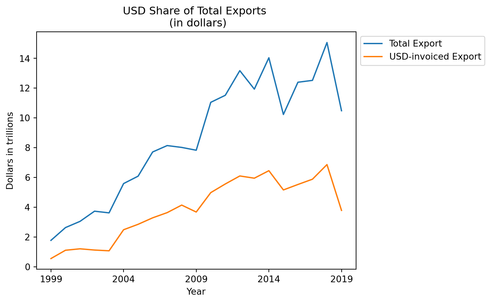
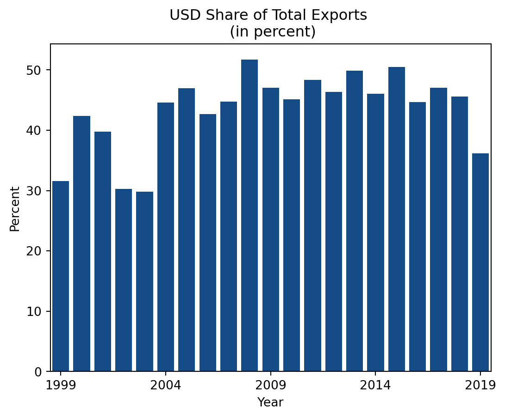
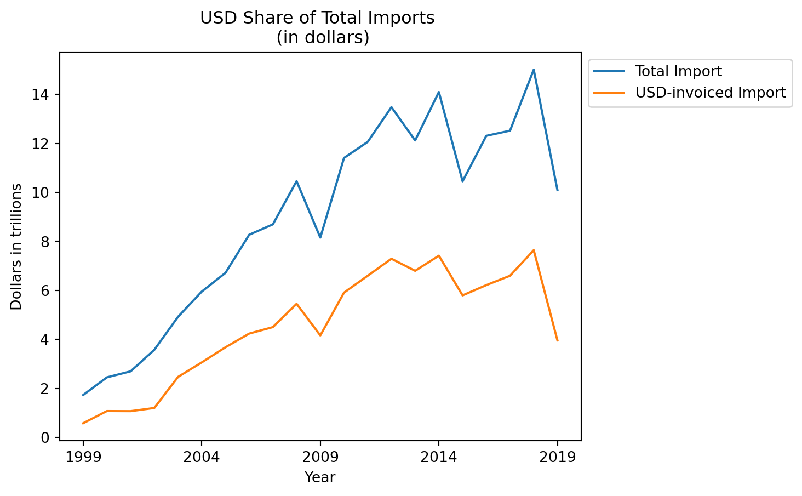
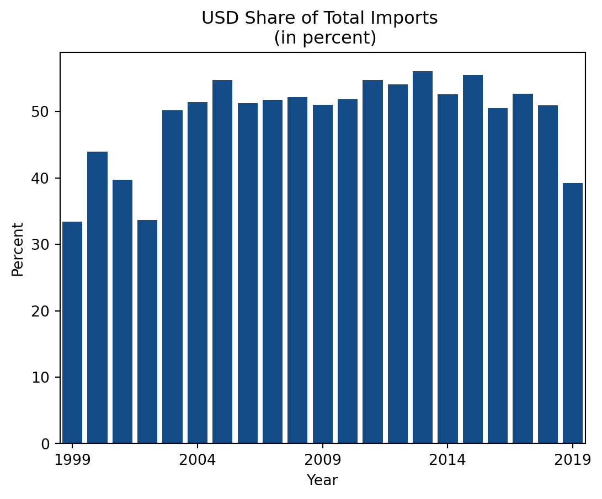
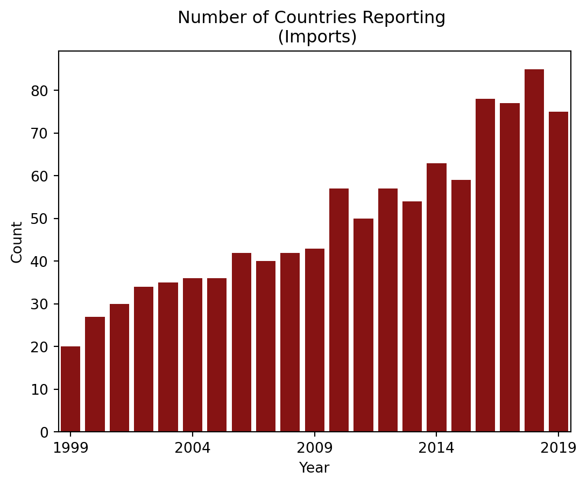
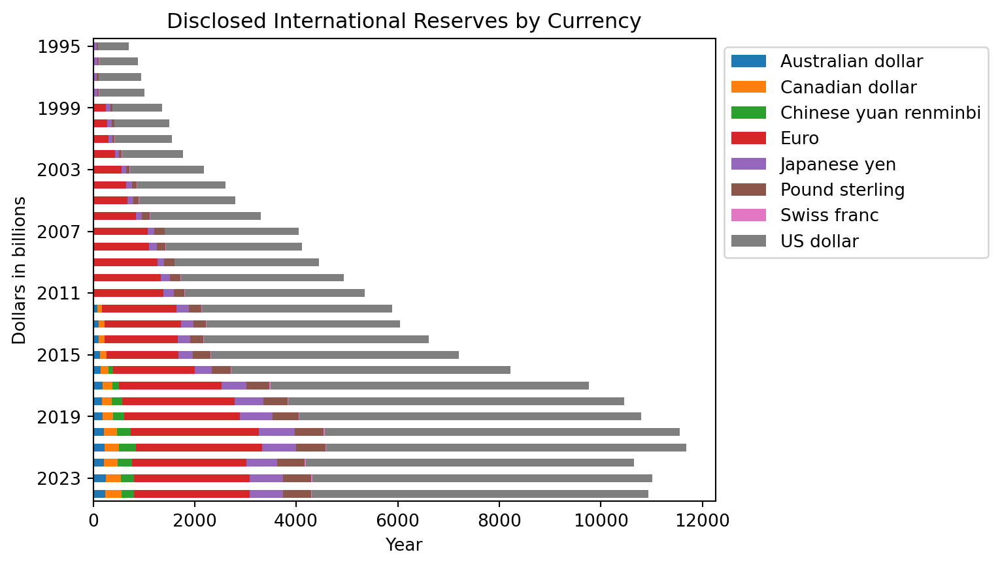
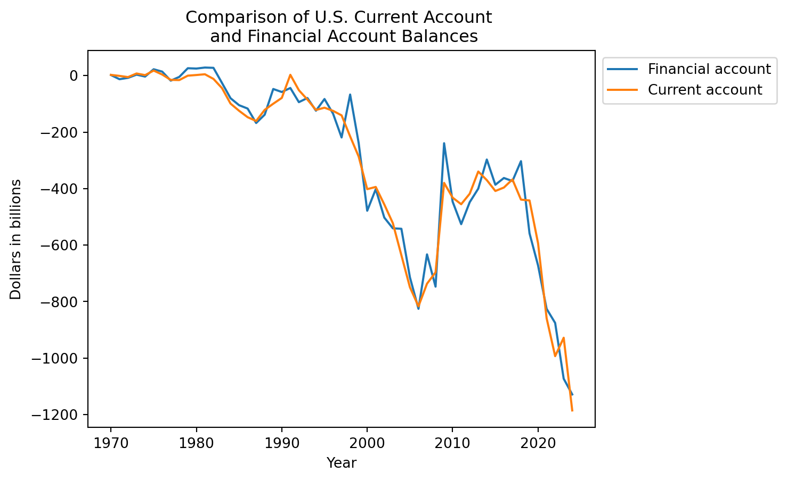
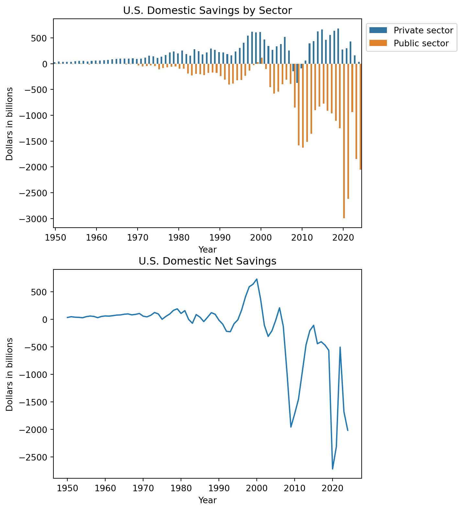
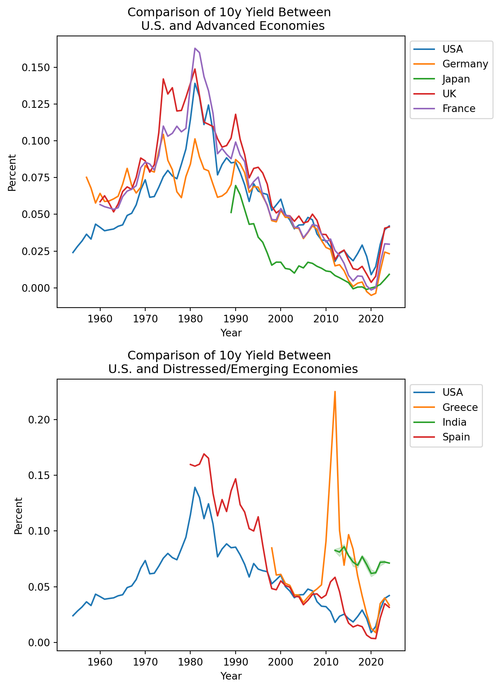

How the global dollar system works
At the end of World War II, the U.S. had significant influence to create a global dollar system in which international trade and financial transactions would be conducted in dollars. Leveraging its status as the sole remaining superpower with the largest share of the world’s economic output and gold reserves, the U.S. argued that a global dollar system would guard against currency wars, trade barriers, and illiquid financial markets that contributed to the onset of World War II.
Fast forwarding to more recent times, data from 1999 to 2019 shows that around 30% - 50% of global exports and imports were invoiced in dollars, indicating that the world continues to operate in a dollar-dominant international trade system.




To supply the world with the dollars necessary to settle international trade transactions, the U.S. must run persistent trade deficits to generate dollar outflows to foreign countries. Historical U.S. current account data indicates that U.S. imports have consistently exceeded U.S. exports starting in the 1980s. However, it is important to note that the U.S. isn’t making a one-sided sacrifice in incurring trade deficits to supply the world with dollars. According to macroeconomic theory, a country’s trade deficits must be funded by foreign financial inflows. Historical U.S. financial account data shows that dollar outflows arising from U.S. trade deficits are largely offset by foreign dollar inflows to the U.S. Most of these foreign dollar inflows consist of noncontrolling portfolio investments in U.S. financial markets.

The foundation for this circular dollar flow rests upon foreign countries’ need to hold dollar reserves for purposes like international trade settlement and foreign exchange rate stabilization. The first two charts below show that the dollar makes up a dominant proportion of the world’s disclosed official reserves. The third chart below shows that foreign countries play a significant role in funding the U.S. government through U.S. treasury purchases.



Policy problems arising from the global dollar system
U.S. violates the Bretton Woods System
Despite the arguments for the merits of the global dollar system, the U.S. faced challenges to supplying the world with dollars early on. Under the original 1944 framework of the Bretton Woods System, the dollar was to be pegged to gold at a fixed rate of $35/oz and other currencies to the dollar. However, as the U.S. greatly increased its money supply to finance its growing government budget deficits related to the Vietnam War and the Great Society Programs in the 1960s, foreign countries began questioning whether the U.S. could credibly maintain the gold peg as global dollar reserves began exceeding U.S. gold reserves.
As mistrust in the U.S. grew, foreign countries started redeeming their dollar reserves for gold. To avoid depleting its gold reserves, the U.S. unilaterally violated the Bretton Woods System in 1971 when President Nixon suspended the dollar’s convertibility to gold. This caused an uproar in the international community, but the world was already deeply entrenched in the global dollar system by this point. From this period onward, the credibility of the global dollar system shifted from U.S. gold reserves to the Federal Reserve’s ability to competently adjust the dollar supply to meet worldwide demand.
Vulnerabilities from growing U.S. debt
With the gold constraint removed, the dollar supply was free to expand flexibly under a new fiat currency regime. However, this set the stage for growing U.S. debt becoming a structural feature of the global dollar system. To understand why, let’s look at the link between U.S. domestic net savings and trade deficits.
With some macroeconomic theory, it can be shown that:
\(\text{Private net savings} + \text{Government budget balance} = \text{Trade balance}\)
By defining the following equality:
\(\text{Private net savings} + \text{Government budget balance} = \text{Domestic net savings}\)
It can be shown that:
\(\text{Domestic net savings} = \text{Trade balance}\)
Given that the U.S. must run persistent trade deficits to supply the world with dollars, one of three scenarios must occur:
| Scenario 1 |
|---|
| Private net savings is negative (i.e., private sector consumes and invests more than its after-tax disposable income) |
| Government runs a budget surplus (i.e., government takes in more tax revenue than it spends) |
| Government budget surplus isn’t large enough to offset negative private net savings |
| Domestic net savings is negative |
| Scenario 2 |
|---|
| Private net savings is positive (i.e., private sector consumes and invests less than its after-tax disposable income) |
| Government runs a budget deficit (i.e., government spends more than its tax revenue) |
| Private net savings aren’t large enough to offset the government budget deficit |
| Domestic net savings is negative |
| Scenario 3 |
|---|
| Private net savings is negative (i.e., private sector consumes and invests more than its after-tax disposable income) |
| Government runs a budget deficit (i.e., government spends more than its tax revenue) |
| Domestic net savings is negative |
The prevailing historical trend in the U.S. has been Scenario 2, where the government budget deficits have consistently exceeded private net savings. This makes sense since the private sector cannot indefinitely spend more than it earns without running into credit problems. The U.S. government, on the other hand, has the sovereign power to issue debt in a currency that it controls, reinforced by the perpetual foreign demand for dollar reserves coming from the global dollar system. The end result is that the U.S. spends more than it saves by financing the gap using savings from the rest of the world.

Unconstrained by the fiscal limitations of other countries lacking reserve currency status, the U.S. debt started ballooning without guardrails. The U.S. government’s lack of fiscal discipline generates significant controversy with both domestic and foreign critics, who protest that they are held captive to subsidizing unpopular U.S. policies like wars. Despite the inherent conflicts of interest that are built into the global dollar system, the dollar’s dominance has allowed the U.S. to finance its debt at relatively low interest rates. The charts below show that the historical 10-year yield for U.S. debt has been comparable to those of other similar advanced countries, whereas countries like Greece, India, and Spain that have either experienced fiscal/financial crises or are emerging economies have had to endure much higher cost of debt.

However, recent U.S. policy choices have raised several concerns about whether the U.S. is self-sabotaging its own ability to sustain growing debt levels by undermining the global dollar system. On the foreign front, there are whispers of foreign countries quietly looking for ways to diversify away from dollar reserves as the U.S. wages trade wars against friends and foes alike. Notable examples include BRICS member countries that are seeking to increase bilateral trade settlements in their own currencies and China building an renminbi-based payment system as an alternative to U.S.-controlled payment systems like SWIFT. To make matters worse, these international trends are occurring in the midst of domestic stresses to the U.S. treasury market. Key examples include U.S. banks’ reduced capacity to absorb new Treasury issuances due to balance sheet constraints and U.S. sovereign credit rating downgrades attributable to federal government shutdowns over spending negotiations.
U.S. shift from an industrialized economy to a financialized economy
Another major policy challenge associated with the global dollar system is the ongoing U.S. attempt to reindustrialize its economy while maintaining the dollar’s reserve currency status. The de-industrialization of the U.S. started accelerating in the 1980s when the U.S. began to justify outsourcing its manufacturing capacity using neoliberal free trade ideology. At the same time, the U.S. economy started becoming increasingly financialized as global capital flows became concentrated in Wall Street. The charts below show that the financial sector (defined here as a combination of finance, insurance, real estate, rental, and leasing) overtook the manufacturing sector’s share of U.S. GDP in the late 1980s as overall U.S. GDP started growing exponentially at the same time. As of 2024, the financial sector makes up more than 20% of U.S. GDP whereas the manufacturing sector makes up less than 10%.
While this sectoral shift reinforced the dollar’s reserve currency status by creating more dollar outflows that get recycled back into the U.S. financial markets, the U.S. now faces a strategic quandary in rebuidling its industrial base to counter China’s rising influence. Recently, the U.S. policy approach to reindustrialization has consisted of using the trade war as a negotiating tool to pressure foreign countries and companies to invest in U.S. manufacturing capacity. However, it is unclear whether domestic industrial self-sufficiency is mutually compatible with the preservation of the global dollar system, which requires dollar outflows and continual demand for dollar reserves arising from international trade.